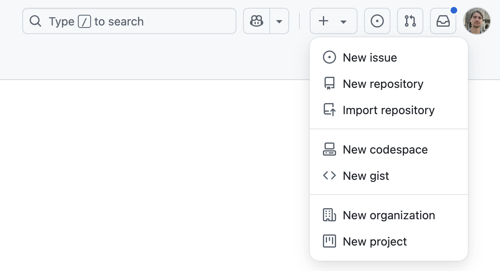
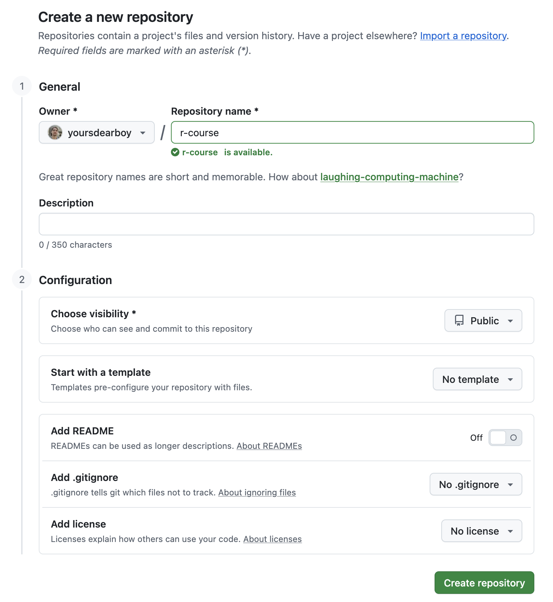
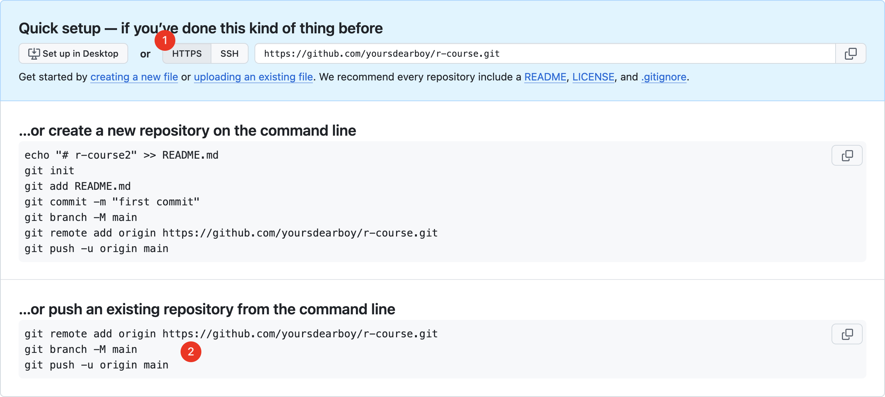
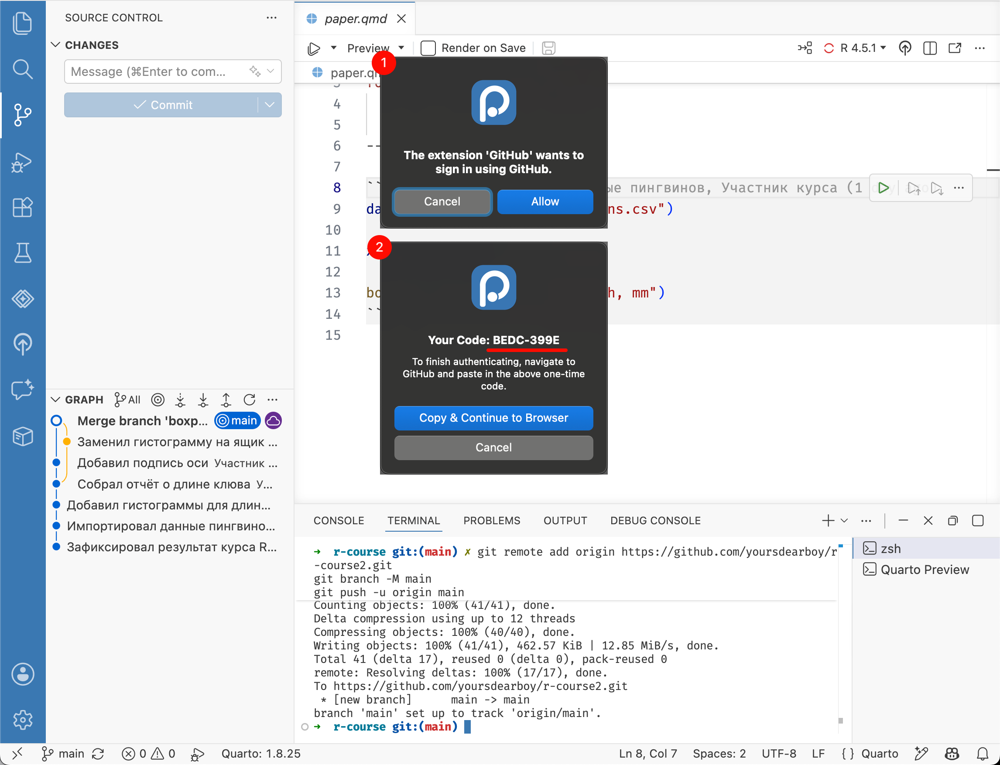
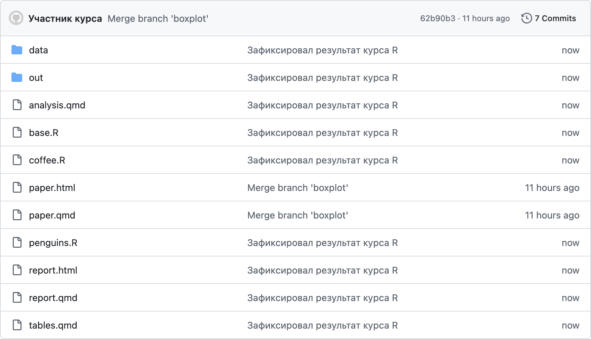

Глава 15 Удалённый репозиторий
Для загрузки репозитория с вашего компьютера (он называется локальный репозиторий) на Github необходимо создать удаленный репозиторий на сайте. На верхней панели в правом углу нажмите кнопку + и выберите пункт New repository.

В открывшейся форме достаточно заполнить только название репозитория в поле Repository name, например r-course.
Остальные поля оставьте по умолчанию, мы только разберем за что они отвечают.
- Description — краткое описание
-
Choose visibility — настройка доступа
- Public — кто угодно сможет просматривать ваши файлы, но только отдельно добавленные пользователи смогут их изменять
- Private — только отдельно добавленные пользователи смогут просматривать и изменять файлы
- Add README, .gitignore, license добавляет в создаваемый репозиторий шаблоны этих файлов; не отмечайте ни один, потому что в нашем репозитории на компьютере уже есть файлы и они будут конфликтовать с этими.
Внизу страницы нажмите Create repository.
Пример заполненной формы

Для созданного репозитория GitHub сгенерировал набор команд для быстрой настройки, воспользуемся ими. Сначала необходимо убедиться, что напротив адреса репозитория выбрана опция доступа через HTTPS (1).

Далее скопируйте все три команды из раздела для существующего репозитория (… or push an existing repository from the command line, 2) и выполните их в терминале. Если закрыли терминал или он занят Quarto, создайте новый терминал.
Positron предложит войти в GitHub. Выберите Allow, запомните код появившийся в новом окне, затем нажмите Copy & Continue to Browser.

В открывшемся окне браузера разрешите доступ, введите код и завершите вход. Вернитесь в Positron.
Мы связали наш локальный репозиторий с удаленным при помощи команды git remote add — это необходимо было сделать один раз.
И выполнили команду git push — отправить локальные коммиты в удаленный репозиторий, это необходимо делать регулярно и для этого Positron есть интерфейс.
Если команды выполнились успешно, файлы были загружены на GitHub. Обновите страницу репозитория и проверьте содержимое файлов.
